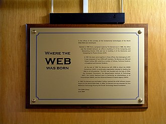

L'invention du Web
Découvrez comment Tim Berners-Lee a créé le Web.
Lire la suiteTim Berners-Lee, inventeur du Web en 1989.
Le 2 septembre 1969, les chercheurs connectent deux énormes ordinateurs de l’université de Californie afin qu’ils échangent des informations. Cette expérience marque les premiers pas d’Arpanet, ancêtre d’Internet. En 1971 ont lieu les premiers échanges par courrier électronique.
Le 1er janvier 1983 est mis en service le protocole d’échange de données TCP/IP, qui définit une manière unique de transmettre les informations par "paquets". Cette uniformisation des protocoles de transfert, imaginée par Vinton Cerf et Robert Kahn, marque la naissance officielle d’Internet.
Quant au Web (ou WWW pour World Wide Web), qui est l’une des applications d’Internet, il est inventé en 1989 au Centre européen de recherche nucléaire (CERN) par Tim Berners-Lee, un physicien britannique. En mettant en ligne sa première page web, le chercheur arrête les grands principes que nous utilisons toujours au quotidien : utilisation d’un navigateur, appel de pages à l’identifiant unique
L’Internet est aujourd’hui une infrastructure informatique généralisée, le premier prototype de ce que l’on appelle souvent l’infrastructure nationale (ou mondiale ou galactique) informatique. Son histoire est complexe et implique de nombreux aspects – technologique, organisationnel et communautaire. Son influence touche non seulement les domaines techniques de la communication informatique, mais toute la société au fur et à mesure que nous nous dirigeons vers une utilisation croissante d’outils en ligne afin de réaliser des opérations communautaires, de commerce électronique et d’acquisition d’informations.

Découvrez comment Tim Berners-Lee a créé le Web.
Lire la suite
Retour sur les premiers logiciels permettant de naviguer sur Internet.
Lire la suite
Comment Internet est-il devenu ce qu'il est aujourd'hui ?
Lire la suiteNom : Mannou Falonne Calista Dagnon
Profession : Référent Digital
Email : falonnedagnon@gmail.com
Téléphone : +229 54 15 13 76